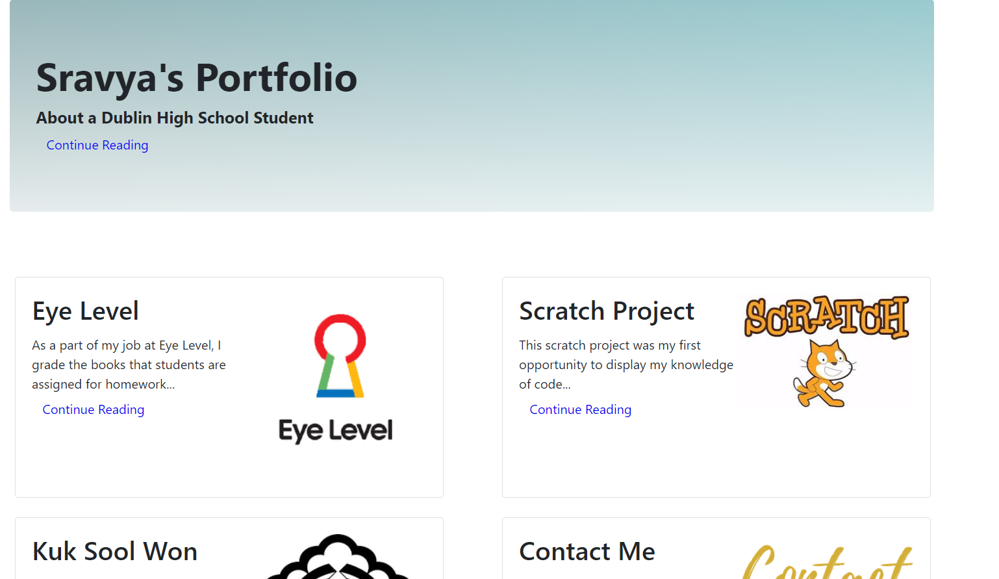

A High School Dilemma
This scratch project was my first opportunity to display my knowledge of code. I completed this project on the Scratch website with a partner within the first few weeks of the computer science class that I am currently taking. This project is about a "high school dilemma" and follows a high school student through her day. The player changes the output of her day as they choose her actions. The inspiration for this game was the app "Episode". The only language that we used when creating this game was Scratch and it was a nice introduction to the class. As we worked through this project, I had to think about many aspects of the game that we normally don't think of as players. Before creating the game, we had to recognize the audience we were targeting and cater towards their interests. Along with some hard skills, such a learning scratch and the process of making a game, I learned some soft skills as well. I learned how to compromise when disagreeing with a partner, how to hold myself and other people accountable for our individual work, and how to work with others in general. It was an interesting process and a valuable experience.
Online Portfolio
This project gave me an opportunity to put my skills in HTML and CSS to use; I was able to practice applications of these skills and was also able to develop those skills. The assignment was essentially to create an online career portfolio that I would be able to use in the future as well as now. This website includes an "About Me" page as well as my resume, my project work experience, as well as a way to contact me. This was the first project that I completed by myself and working without a partner allowed me to figure out my personal strengths and weakness in programming, specifically in HTML and CSS. This was my favorite project to work on, as I was able to expand on a programming language that I enjoyed working with and I was able to get creative in the process of making my website look presentable and pleasant.
